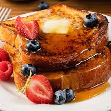

French Toast

Damn good french toast
Follow this receipe to become a french toast expert
Ingredients
- 6 slices of bread
- 2 eggs
- 1/4 cup of milk (probably)
- 1/4 tsp of cinnamon
Instructions
- Break the eggs into a bowl. Add the milk and cinnamnon. Beat until well mixed.
- Melt the butter in a skillet over medium heat.
- Soak a slice of bread in the egg mixture and then place in the pan. Cook for 3 minutes on each side.
- Repeat step 3 for the remaining pieces of bread.
- Serve with maple syrup and berries, if desired